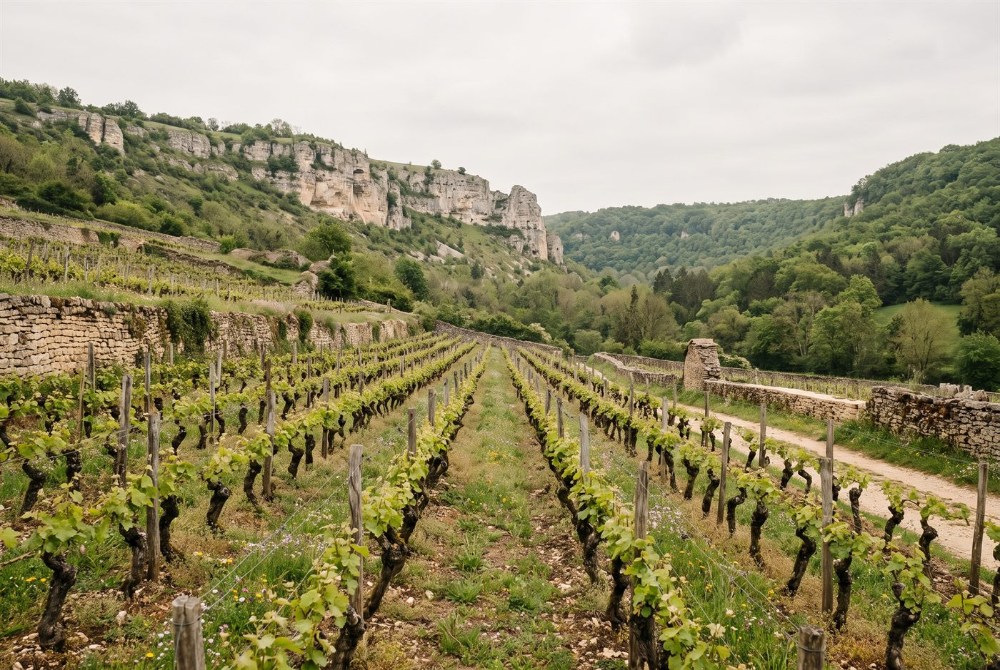

Les domaines · Côte de Nuits · Morey-Saint-Denis
06
Morey-Saint-Denis · Côte de Nuits
Domaine Amiot & Fils
Des Morey-Saint-Denis d'élégance et de générosité, vendangés à la main et élevés 16 à 18 mois en fût.

Ambiance de Morey-Saint-Denis
Installée à Morey-Saint-Denis depuis dix générations, la famille Amiot cultive aujourd'hui environ 5 hectares répartis sur Morey, Gevrey-Chambertin et Chambolle-Musigny, dont deux grands crus. Jean-Louis Amiot, rejoint par son fils Léon en 2020, conduit un vignoble certifié HVE et en conversion vers l'agriculture biologique. Le domaine figure parmi les Vignerons de l'année 2026 du Guide Hachette des Vins.
Blancs
- Cépage · ChardonnayRare blanc de Morey-Saint-Denis, l'un des seuls villages de la Côte de Nuits à en produire.
Rouges
- Cépage · Pinot noirLe grand cru emblématique de Morey-Saint-Denis, souvent cité comme le vin phare du domaine.
- Cépage · Pinot noirSecond grand cru du domaine, sur la commune voisine de Gevrey-Chambertin.
- Cépage · Pinot noirPremier cru situé au sud du village, à la limite de Chambolle-Musigny.
- Cépage · Pinot noirPremier cru voisin du Clos de la Roche, sur le coteau central de Morey.
- Cépage · Pinot noirPremier cru situé au nord du village, dans le prolongement des Charmes de Gevrey.
- Cépage · Pinot noir
- Cépage · Pinot noirPremier cru de Gevrey enclavé entre plusieurs grands crus, à la limite de Morey.
- Cépage · Pinot noirLe village rouge du domaine, assemblage de parcelles autour de la maison familiale.
- Cépage · Pinot noir
Ces cuvées vous parlent ?
Demander les disponibilités